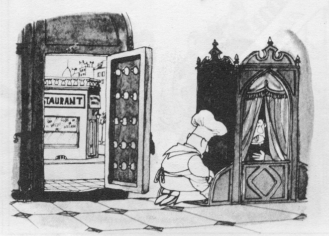

s1_interpretar
Navaja de Occam
La navaja de Occam, también conocido como principio de parsimonia o de máxima simplicidad consiste en "Decir lo más con lo menos", en "de dos explicaciones, elegir la más simple". Tiene su versión sicalíptica en el "principio del bikini": cubrir lo esencial con el menor material posible.
¿Dónde está el chiste del siguiente chiste?

El cocinero se confiesa; el cura hace gesto de asco. El cocinero trabaja en el restaurant, En la acera del restaurant hay un respiradero, posible entrada de ratas.
Interpretación: el cura come en el restaurant cuyo cocinero reconoce la baja higiene de los alimentos.
Interpretación en música
Aarón Copland, compositor y director de orquesta, propuso dos preguntas para disfrutar más la música.
- ¿Me doy cuenta de todo lo que ocurre?
- ¿Me dice algo?
Vale decir el disfrute es mayor cuanto más del sujeto intervenga en la experiencia. Nótese que el disfrute de la música no es, como dicen los académicos, algo meramente intelectual. Es personal, por tanto, es también sensorial.
¡cualquier disfrute, gozo, placer, experiencia tiene componentes sensoriales!
Todos nos hemos preguntado por el sentido de un chiste, de un curso, de una acción, de una expresión. Pasamos por alto que el sentido es sentido, no es entendido. La comprensión lleva al disfrute, a la relajación, a un estado interno de bienestar del sujeto. Es exclusivo e intransferible pues implica sus experiencias únicas.
Obra publicada con Licencia Creative Commons Reconocimiento Compartir igual 4.0